机器学习（支持向量机）
支持向量机
===
支持向量机（Support Vector Machines, SVM）。在介绍SVM之前，先解释几个概念：
- 线性可分：假设一个平面中有若凡个圆形与三角形，可以使用一条直线将两组数据点分开，那么叫做线性可分。
- 分隔超平面：上面提到的将数据集分开的直线，称为分隔超平面。
- 超平面：在上面的例子中，是一个平面，那如果是一个三维的，那么用来分割点的就是一个平面，如果是N维的的？这个玩意就被叫做超平面，也就是分类的决策边界。
- 间隔：数据点到分隔面的距离被称为间隔。一般情况下，我们希望间隔尽可能的大，这是因为如果我们犯错或者在有限的数据集上训练分类器的话，我们希望分类器尽可能健壮。
- 支持向量：离分隔超平面最近的那些点。
寻找最大间隔
如果求解数据集的最佳分隔直线？分隔超平面的形式可以写成：
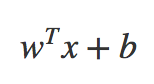
要计算点A到分隔超平面的距离，就必须给出点到分隔面的法线或垂线的长度，该值写为：
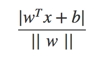
||w||的意思是w向量的各个元素的平方和的开平方
这里的常数b类似于Logistic回归中的截距Wо。
这里的向量w和常数b一起描述了所给数据的分隔线或超平面，接下来我们讨论分类器。
分类器求解的优化问题
前面已经提到了分类器，但还没有介绍它的工作原理。理解其工作原理将有助于理解基于优化问题的分类器求解过程。输入数据给分类器会输出一个类别标签，这相当于一个类似Sigmoid的函数在作用。下面将使用类似海维塞德阶跃函数的函数对分隔超平面的公式作用得到：
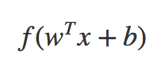
其中，当u<0时，f(u)输出-1，反之则输出+1。这和钱一张的Logistic回归有所不同，那里的类别标签是0或1。这里为什么呢？因为-1和+1仅差一个符号，便于数学上的处理。我们可以通过一个统一的公式来表示间隔或者数据点到分隔超平面的距离，同时不必担数据到底是属于-1还是+1类。
当计算数据点到分隔面的距离并确定分隔面的放置位置时，间隔通过：
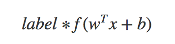
来计算，这时候就能提现出-1和+1的好处了，如果数据点处于正方向并且离分隔超平面很远的位置时：
会是一个很大的正数，同时，上式也是一个很大的正数，而如果数据点处于负方向的-1类并且离分隔超平面很远的位置时，由于类别标签为-1，上式仍然是一个很大的正数。现在的目标就是找出分类器中的w和b。为此，我们必须找到具有最小间隔的数据点，而这些数据点也就是前面提到的支持向量。一旦找到具有最小间隔的数据点，我们就需要对该间隔最大化，这就可以写作：
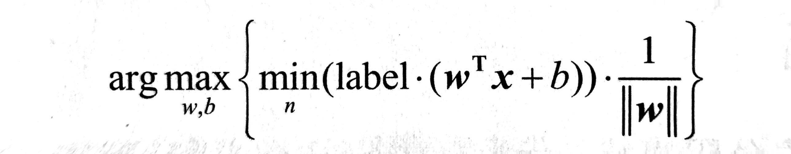
直接求解上述问题相当困难，所以我们将它转换为另一种更容易求解的形式。首先考察一下上式中大括号内的部分。由于对乘积进行优化是一件很讨厌的事情，因此我们要做的是固定其中一个因子而最大化其他因子。如果另所有支持向量的
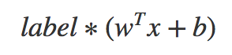
都等于1，只有那些离分隔超平面最近的点得到的值才为1。而离分隔超平面越远的数据点，值也就越大。
在上述优化问题中，给定了一些约束条件然后求最优值，因此该问题是一个带约束条件的优化问题。这里的约束条件就是：
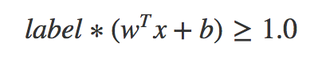
对于这类优化问题，有一个非常著名的求解方法，即拉格朗日乘子法，通过引入拉格朗日乘子，我们就可以基于约束条件来表述原来的问题。由于这里的约束条件都是基于数据点的，因此我们就可以将超平面写成数据点的形式。于是，优化目标的函数最后可以写成：
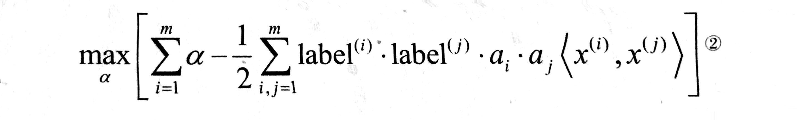
尖括号内标识两个向量的乘积
其约束条件为：
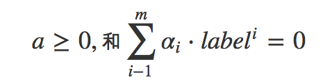
至此，一切都很完美，但是这里有个假设：数据必须100%线性可分。目前为止，我们知道几乎所有数据都不会这样，这时我们就可以通过引入松弛变量，来允许有些数据点可以处于分隔面的错误一侧。这样我们的优化目标就能保持仍然不变，但是此时新的约束条件则变为：
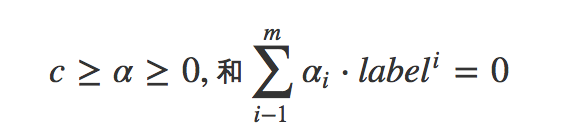
这里的常数c用于控制”最大化间隔” 和 “保证大部分点的函数间隔小于1.0” 这两个目标的权重。在优化算法的实现代码中，常数C是一个参数，因此我们就可以通过调节该参数得到不同的结果。一旦求出了新的alpha，那么分隔超平面就可以通过这些alpha来表达。这一结论十分直接，SVM中的主要工作就是求解这些alpha。要理解刚才这些公式还需要大量的知识，如果你有兴趣，可以去搜索一下相关的推导过程。
SVM应用中的一般框架
- 收集数据：可以使用任意方法
- 准备数据：需要数值型数据
- 分析数据：有助于可视化分隔超平面
- 训练算法：SVM的大部分时间都源自训练，该过程主要实现两个参数的调优
- 测试算法：十分简单的计算过程就可以实现
- 使用算法：几乎所有的分类问题都可以使用SVM，值得一提的是，SVM本身是一个二类分类器，对多累问题应用SVM需要对代码做一些修改。
SMO 高效优化算法
接下来我们优化2个上面提到的式子，一个是最小化的目标函数，一个是在优化过程中必须遵循的约束条件。下面我们先看Platt的SMO算法。SMO表示序列最小优化，将大优化问题分解为多个小优化问题求解，这些小优化问题往往很容易求解，并且对他们的顺序求解的结果与将他们作为整体来求解是完全一致的。在结果完全相同时，SMO算法的求解时间短很多。SMO算法的目标是求出一系列alpha和b，一旦求出了这些alpha，就很容易计算出权重向量w并得到分隔超平面。SMO算法的工作原理是：每次循环中选择两个alpha进行优化处理。一旦找到一对合适的alpha，那么就增大其中一个同时减小另一个。这里所谓的合适，就是指两个alpha必须要符合一定的条件，条件之一就是这两个alpha必须要在间隔边界之外，而其第二个条件则是这两个alpha还没有进行过区间化处理或者不在边界上。
应用简化版 SMO 算法处理小规模数据集：完整算法的实现需要大量的代码，我们先对算法进行简化处理，以便了解算法的基本工作思路，之后再基于简化版给出完整版。简化版代码量虽少，但是执行速度慢。在SMO算法中，外循环确定要优化的最佳alpha对。而简化版会跳过这一部分，首先在数据集上遍历每一个alpha，然后在剩下的alpha集合中随机选择另一个alpha，从而构建alpha对。这里有一点相当重要，就是我们要同时改变两个alpha，之所以这样做是因为我们有一个约束条件：
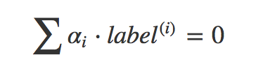
由于改变一个alpha可能会导致该约束条件失效，因此我们总是同时改变两个alpha。为此，我们将构建一个辅助函数，用于在某个区间范围内随机选择一个整数。同时，我们也需要另一个辅助函数，用于在数值太大时对其进行调整。我们开始写代码：
|
|
进行简单的读取测试：
|
|
我们也可以看的出来，这里使用的类别标签是-1和1，并不是0和1.上述工作完成后，就可以使用SMO算法的第一个版本了，该SMO函数的伪代码大致如下：
|
|
在python中，如果某行以
\符号结束，那么就意味着该行语句没有结束并会在下一行延续。 类似与 OC 中宏定义的\换行，接下来我们来看一个简化版的SMO算法：
|
|
这个函数比较大，可能是学习过程中最大的一个函数了，希望大家细细的看一下代码的注释。
函数的解析我还是等一个头脑清醒的时候弄吧，现在已经12点10分了，稍有点晕乎，去搞搞业务代码
由于SMO算法的随机性，所以运行后得到的结果可能每次都不同。
alphas[alphas > 0]命令是数组过滤的一个实例，只对Numpy类型有用。
为了得到支持向量的个数，输入:
|
|
利用完整 Platt SMO 算法加速优化
在几百个点组成的小规模数据集上，简化版 SMO 算法的运行是没有什么问题的，但是在更大的数据集上的运行速度就会变慢，下面我们讨论完整的SMO算法。这两个版本中，实现alpha的更改和代数运算的优化环节是相同的。在优化的过程中，唯一不同的是选择alpha的方式。完整的SMO算法应用了一些能够提速的启发方法。Platt SMO 算法是通过一个外循环来选择第一个alpha值的，并且选择过程会在两种方式之间进行交替：
- 在所有数据集上进行单遍扫描
- 在非边界alpha中实现单遍扫描 （不等于边界0或者C的alpha值）
对整个数据的扫描非常容易，而实现非边界alpha的扫描时，首先需要建立这些alpha值的列表，然后在对这个表进行遍历，同时该步骤会跳过那些已知的不会改变的alpha值。
在选择第一个alpha值之后，算法会通过一个内循环来选择第二个alpha值。在优化过程中，会通过 最大化步长 的方式来获得第二个alpha值。在简化版SMO算法中，我们会在选择 j 之后计算错误率 Ej 。但是在这里，我们会建立一个全局的缓存用于保存误差值，并从中选择使得步长或者说 Ei-Ej 最大的alpha值。并且我们在其中加入了 核函数，核函数作为一种工具，将数据转换成易于分类器理解的形式。下边加入的是一种称为 径向基函数 的最流行的核函数。那么究竟什么是核函数呢？
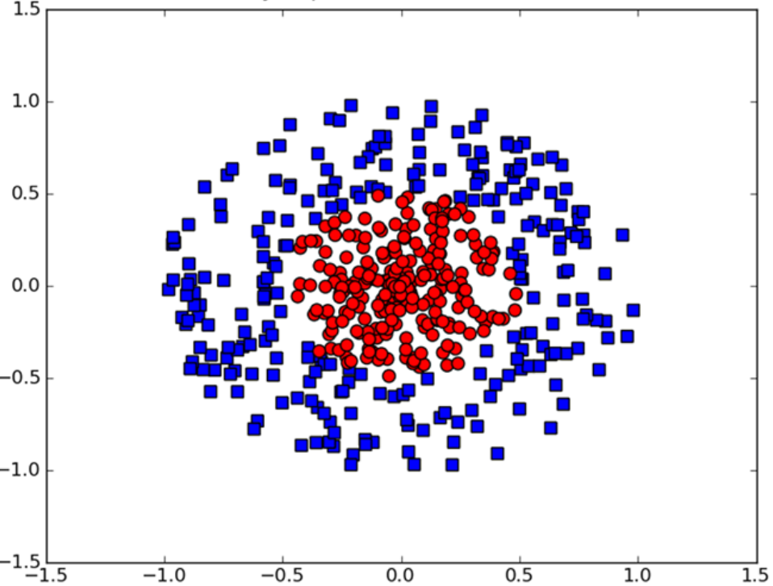
如上图所示，数据点处于一个圆中，人类的大脑可以看出来，但是对于分类器而言，它只能识别分类器的结果是大于 0 还是小于 0 ，如果只在x、y轴画线进行分类的话，我们并不会得到理想的结果。所以我们将数据从一个特征空间转换到另一个特征空间，在新的空间下，我们可以很容易的利用已有的工具对数据进行处理，数学家们喜欢将这个过程称之为 从一个特征空间到另一个特征空间的映射。在通常情况下，这种映射会将低维特征空间映射到高维空间。这个过程是通过核函数来实现的。可以把核函数想为一个 包装器 或者是 接口 ，它能把数据从某个很难处理的形式转换成为另一个较容易处理的形式。
在SVM优化中一个特别好的地方就是，所有的运算都可以写成
内积（也称点积）的形式。向量的内积指的是两个向量相乘，之后得到单个标量或者数值。我们可以把内积运算替换成核函数，而不必做简化处理。将内积替换成核函数的方式被称为核技巧或者核变电。
径向基核函数
这是一个在SVM中常用的一个核函数，径向基函数是一个采用向量作为自变量的函数，能够基于向量距离运算输出一个标量。接下来，我们将会使用到径向基函数的高斯版本，其具体公式为：
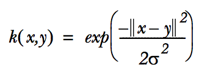
其中，σ 是用户定义的用于确定 到达率 或者说函数值跌落到 0 的速度参数。接下来我们写出完整的代码：
|
|
接下来我们编写一个测试函数：
|
|
|
|
随便更改测试函数中k的值，发现错误率不同，这个值与数据相关。
结语
支持向量机是一种分类器，是一种决策机，这是一个相当流行的算法。核方法不仅在SVM中适用，还可以用于其他算法，上边使用的径向基函数是一个常用的度量两个向量距离的核函数。支持向量机是一个二类分类器，当用其解决多类问题时，则需要额外的方法对其进行扩展。SVM的效果也对优化参数和所用核函数中的参数敏感。